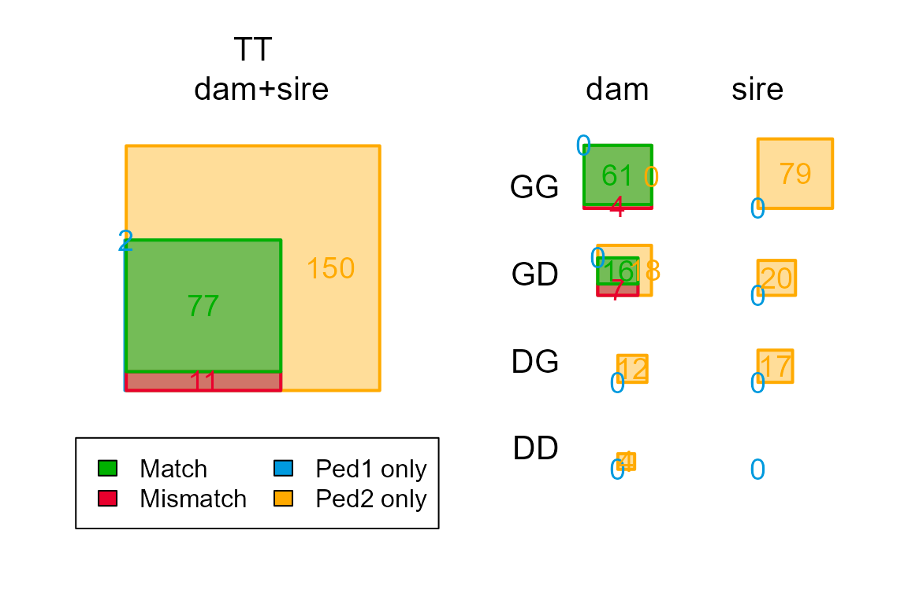

PedCompare Example (Griffin Pedigree)
pedcompare_example.RmdWhy compare pedigrees
It is often worthwhile to compare a newly inferred genetic pedigree to an older (field-)pedigree, as no dataset is flawless, nor is genetic pedigree reconstruction infallible.
Discrepancies between the pedigrees may bring to light mislabeled samples, incorrect birth or death years, or incorrectly inferred pedigree links. For example, if an individual’s genetically inferred mother differs from its field-observed mother, this may be due to a mislabeled DNA sample, a pedigree inference error, an error in the field records, or egg dumping/adoption. Eliminating possibilities and tracking down the most likely scenario can be rather time consuming, but will increase the overall quality of the dataset and pedigree.
In addition, the pedigree comparison may be able to match dummy parents in the genetic pedigree to real, non-genotyped parents in the field pedigree. This allows pedigree records (offspring number, mates, etc.) to be combined with phenotypic records (age, size, etc.) of those non-genotyped individuals.
Here, the process is illustrated by comparing genetically assigned and field observed mothers in a fictional population of griffins.
Study population
Nests have been monitored in a small, closed population of griffins,
where each year exactly 20 baby griffins hatch. The mother of most
individuals is known from field observations (example data
FieldMums_griffin included in the package). From 2001 to
2010, most hatchlings are tagged, and sampled for SNP genotyping. From
this, a genetic pedigree has been reconstructed (example data
SeqOUT_griffin). Breeding females without tags, are given a
two-colour code 1. This may including females who have lost
their tags.
Comparing pedigrees
library(sequoia)
data(SeqOUT_griffin, FieldMums_griffin, package="sequoia")
PCG <- PedCompare(Ped1 = cbind(FieldMums_griffin,
sire = NA),
Ped2 = SeqOUT_griffin$Pedigree,
SNPd = SeqOUT_griffin$PedigreePar$id,
Symmetrical = TRUE, Plot=FALSE)In essence, PedCompare() lies the two pedigrees
side-by-side and classifies each individual’s parent as being the same
in the two pedigrees (Match) or not
(Mismatch), or only having a parent in only one of the
pedigrees (P1only or P2only).
While Match versus Mismatch is
straightforward when all individuals are genotyped, and all IDs are
(thus) consistent between the two pedigrees, it becomes more complicated
when non-genotyped individuals and dummy IDs are involved.
PedCompare() tries to match each sibship-dummy-parent in
Pedigree2 (F0001, F0002, etc.) to a non-genotyped parent in Pedigree1
(here these are the IDs consisting of 2 colours: PinkBlue, BlueRed,
etc.).
$MergedPed
The side-by-side pedigrees are given in the list element
$MergedPed of the output:
## id dam.1 dam.2 dam.class
## 127 i165_2009_F PinkBlue F0002 Match
## 128 i166_2009_F PinkBlue F0002 Match
## 129 i169_2009_M i133_2007_F i133_2007_F Match
## 130 i170_2009_F BlueRed F0001 Match
## 131 i171_2009_M <NA> F0013 P2only
## 132 i173_2009_F BlueRed F0001 Match
## 133 i174_2009_F <NA> F0012 P2onlyThis part-pedigree for example shows that individuals i165_2009_F and
i166_2009_F have the non-genotyped female ‘PinkBlue’ as field observed
mother (dam.1 = dam in Pedigree1). The pair are also
genetically assigned as maternal siblings, with ‘F0002’ as dummy ID for
the mother (dam.2). And, while the ID of the mother differs
between the two pedigrees, it is nonetheless considered a
Match (dam.class, short for
classification).
id columns
A point of clarification on the id columns:
- column
idare the ids common to both pedigrees, plus those only occurring in Pedigree2 (typically the dummy IDs F0001, F0002 etc.)
- column
id.rare the ‘consensus’ ids, plus those only occurring in Pedigree1
For example, ‘PinkBlue’ does not have a mother in Pedigree1 (first
row in MergedPed below: id.r=PinkBlue,
dam.1=NA). Pedigree2 tells us that ‘F0002’ has genetic
mother ‘F0007’, which is not hugely informative of itself
(MergedPed: id=F0002,
dam.2=F0007). But PedCompare() then tells us
that this means that ‘PinkBlue’ (id.r) has ‘YellowPink’ as
mother (dam.r), which has a lot more meaning (to someone
working in the field).
# subset some individuals:
these <- c("i177_2009_M", "i179_2009_M", "i165_2009_F", "i166_2009_F", "F0002",
"F0007", "YellowPink", "PinkBlue")
knitr::kable(list(Ped1 = FieldMums_griffin[FieldMums_griffin$id %in% these, ],
Ped2 = SeqOUT_griffin$Pedigree[SeqOUT_griffin$Pedigree$id %in% these, 1:3]),
caption = "Subsets of Pedigree1 (left) and Pedigree2 (right)")
|
|
## id id.r dam.1 dam.2 dam.r
## 2 F0002 PinkBlue <NA> F0007 YellowPink
## 7 F0007 YellowPink <NA> <NA> <NA>
## 127 i165_2009_F i165_2009_F PinkBlue F0002 PinkBlue
## 128 i166_2009_F i166_2009_F PinkBlue F0002 PinkBlue
## 136 i177_2009_M i177_2009_M YellowPink F0007 YellowPink
## 137 i179_2009_M i179_2009_M YellowPink F0007 YellowPink
$DummyMatch
The output list element $DummyMatch summarises the
matches:
## id.2 id.1 off.Match off.Mismatch off.P1only off.P2only
## 1 F0001 BlueRed 4 4 0 3
## 2 F0002 PinkBlue 3 0 0 0
## 3 F0003 GreenYellow 3 2 0 0
## 4 F0004 nomatch 0 0 0 2
## 5 F0005 nomatch 0 2 0 0
## 6 F0006 RedOrange 3 0 0 0For the match between ‘F0002’ in Pedigree2 and ‘PinkBlue’ in
Pedigree1 (bottom row), there are 3 matching offspring, and no offspring
by ‘PinkBlue’ that are genetically assigned to a different sibship
cluster or mother (off.Mismatch) or have no genetic mother
assigned (off.P1only), nor are there any members of the
genetic sibship F0002 with no mother in Pedigree1
(off.P2only). Thus, a perfect one-to-one match.
For genetic sibship ‘F0001’, however, the situation is more complicated, and this will be worked through in detail below.
‘nomatch’ in the id.1 column indicates either that none
of the individuals in this genetic sibship had a field-observed mother,
or that the field-observed mother is matched to a different genetic
sibship, with which there was a larger overlap.
$Counts
The total number of matches and mismatches is summarised in the 3D
array $Counts, which can be visualised with
PlotPedComp():
PlotPedComp(PCG$Counts)
Since there are no sires in our field pedigree, we will have a look
at the dam slice only:
PCG$Counts[,,"dam"]## class
## cat Total Match Mismatch P1only P2only
## GG 65 61 4 0 0
## GD 41 16 7 0 18
## GT 107 77 11 1 18
## DG 12 0 0 0 12
## DD 4 0 0 0 4
## DT 16 0 0 0 16
## TT 124 77 11 2 34The counts for each classification are subdivided into various categories (rows), based on whether the focal individual (first letter) and parent (second letter) are Genotyped or a Dummy individual, as well as the Totals. The totals counts includes individuals in Pedigree1 who are neither genotyped nor ‘dummifiable’, such as a non-genotyped parent with a single offspring, and therefore exceeds the sum of G and D.
We will go through each of the three classes of discrepancies in turn
– Mismatch, P1only (only field mum), and
P2only (only genetic mum).
Mismatch
To get more detail on the 11 mismatches, we head back to
$MergedPed. For brevity, we display only the columns in
which we’re currently interested:
PCG$MergedPed[which(PCG$MergedPed$dam.class == "Mismatch"), c("id", "dam.1", "dam.2", "id.dam.cat")]## id dam.1 dam.2 id.dam.cat
## 87 i108_2006_F GreenBlue i081_2005_F GG
## 98 i122_2007_M GreenBlue i081_2005_F GG
## 99 i123_2007_F OrangeGreen F0001 GD
## 100 i124_2007_M GreenBlue i081_2005_F GG
## 104 i130_2007_F OrangeGreen F0001 GD
## 105 i131_2007_F OrangeGreen F0001 GD
## 107 i133_2007_F OrangeGreen F0001 GD
## 112 i142_2008_M GreenBlue i081_2005_F GG
## 116 i147_2008_F YellowBlue F0003 GD
## 117 i148_2008_F GreenYellow F0005 GD
## 124 i159_2008_F YellowBlue F0005 GDThus while there are 11 individuals with mismatching mothers, there are only 4 unique mothers involved, which we will look at in turn.
Mismatch Issue1: GreenBlue
PedM <- PCG$MergedPed[, c("id", "dam.1", "dam.2")] # short-hand to minimise typing
# does the mismatch affect all of GreenBlue's offspring?
PedM[which(PedM$dam.1 == "GreenBlue"), ]## id dam.1 dam.2
## 87 i108_2006_F GreenBlue i081_2005_F
## 98 i122_2007_M GreenBlue i081_2005_F
## 100 i124_2007_M GreenBlue i081_2005_F
## 112 i142_2008_M GreenBlue i081_2005_F
# > yes, these 4 are all of her known offspring
# does genetic mother i081_2005_F have any field-observed offspring?
PedM[which(PedM$dam.1 == "i081_2005_F"), ]## [1] id dam.1 dam.2
## <0 rows> (or 0-length row.names)
# no.
# does i081_2005_F have any other genetic offspring?
PedM[which(PedM$dam.2 == "i081_2005_F"), ]## id dam.1 dam.2
## 87 i108_2006_F GreenBlue i081_2005_F
## 98 i122_2007_M GreenBlue i081_2005_F
## 100 i124_2007_M GreenBlue i081_2005_F
## 112 i142_2008_M GreenBlue i081_2005_F
# no.It seems ‘GreenBlue’ is a perfect match with ‘i081_2005_F’: all four of GreenBlue’s observed offspring are genetically assigned i081_2005_F as mother, and all four of i081_2005_F’s genetic offspring have GreenBlue as observed mother. Perhaps this female lost her tag, was therefore not recognised, and received a new field ID. Field records may be able to back this theory up, or disprove it: Did GreenBlue look about 1 year old when first recorded in 2007? Was i081_2005_F ever seen in or after the 2006 breeding season? Does i081_2005_F have a known death date? If so, was there a post-mortem, or was she presumed dead because she had not seen for several months/years?
An alternative explanation might be a pedigree inference error, but
this is highly unlikely when offspring and parent are both genotyped
(id.dam.cat = 'GG'), and only plausible with a limited
number of SNPs with low call rate and high genotyping error rate. The
four assignments are independent if they were done during parentage
assignment, but not necessarily so during full pedigree reconstruction:
they may first have been clustered as maternal siblings, and
subsequently the dummy mother may have been replaced by i081_2005_F.
Dummy individuals in Pedigree2 are never matched to genotyped individuals in Pedigree1, even if there is a perfect match such as here – there is almost always something odd going on that requires user inspection.
Resolution: Merge IDs ‘i081_2005_F’ and ‘GreenBlue’
Mismatch Issue2: OrangeGreen
# why is this flagged as a mismatch?
PedM[which(PedM$dam.1 == "OrangeGreen"), ]## id dam.1 dam.2
## 99 i123_2007_F OrangeGreen F0001
## 104 i130_2007_F OrangeGreen F0001
## 105 i131_2007_F OrangeGreen F0001
## 107 i133_2007_F OrangeGreen F0001
# all of OrangeGreen's offspring are in sibship F0001
PedM[which(PedM$dam.2 == "F0001"), c("id", "dam.1", "dam.2")]## id dam.1 dam.2
## 5 F0005 <NA> F0001
## 13 F0013 <NA> F0001
## 99 i123_2007_F OrangeGreen F0001
## 104 i130_2007_F OrangeGreen F0001
## 105 i131_2007_F OrangeGreen F0001
## 107 i133_2007_F OrangeGreen F0001
## 123 i158_2008_M BlueRed F0001
## 125 i160_2008_F BlueRed F0001
## 130 i170_2009_F BlueRed F0001
## 132 i173_2009_F BlueRed F0001
## 165 M0008 <NA> F0001
# but sibship F0001 is split across two field mothersSo, the genetic sibship with ‘F0001’ as dummy mother includes individuals with two different field-observed mothers, ‘OrangeGreen’ and ‘BlueRed’. OrangeGreen’s offspring hatched in 2007, and BlueRed’s in 2008 and 2009. Perhaps this female was not regularly monitored, was not recognised at the start of the 2008 breeding season, and got a new ID?
As for the previous case, field records that could disprove this theory are census records of BlueRed in or before 2007, or of OrangeGreen in or after 2008 (or if they were seen together!). Records backing up this theory are notes like ‘this could be…’ or ‘looks similar to …’ when BlueRed was first described. This cautionary approach to use a new ID is advisable, as it is often much easier to combine the records of two IDs later on, than to try to tease apart records under a single ID into their respective IDs.
An alternative explanation is again a pedigree inference error,
namely that sequoia has erroneously merged two actual
sibships. This may sporadically happen when the two mothers are closely
related. When the mothers are related by \(>0.5\) (closer than regular full
siblings, due to inbreeding), such erroneous merging can happen even
with large powerful SNP sets.
Resolution: Probably merge IDs OrangeGreen’ and ‘BlueRed’
Mismatch Issue3: YellowBlue
# as before
PedM[which(PedM$dam.1 == "YellowBlue"), ]## id dam.1 dam.2
## 116 i147_2008_F YellowBlue F0003
## 124 i159_2008_F YellowBlue F0005
# something odd going on involving sibships F0003 & F0005
PedM[which(PedM$dam.2 %in% c("F0003", "F0005")), ]## id dam.1 dam.2
## 97 i121_2007_M GreenYellow F0003
## 108 i135_2007_F GreenYellow F0003
## 114 i144_2008_M GreenYellow F0003
## 116 i147_2008_F YellowBlue F0003
## 117 i148_2008_F GreenYellow F0005
## 124 i159_2008_F YellowBlue F0005so:
- i147_2008_F has field mum YellowBlue, but its three genetic sibs suggest GreenYellow as mum
- i148_2008_F has field mum GreenYellow, but its genetic sib (i159_2008_F) suggest YellowBlue as mum
A likely explanation is that the samples of these individuals were accidentally swapped around in the lab during DNA extraction, i.e. that genotype ‘i147_2008_F’ belongs to field id ‘i148_2008_F’, and v.v.. Lab notes might shed light on this theory, e.g. was the DNA extracted in the same batch? Where the samples adjacent on the same 96-well plate?
An alternative explanation is sloppy handwriting or typing error. Whether in this case genotype ‘i147_2008_F’ belongs to field id ‘i147_2008_FM’ or ‘i148_2008_F’ depends on when this mixup happened, i.e. whether the field data are swapped between the individuals too.
A pedigree inference error seems unlikely in this particular case – individuals may occasionally get assigned to the wrong sibship, due to genotyping errors, a low call rate sample, or an uncommon draw in the Mendelian inheritance lottery, but it seems highly unlikely that this would result in two individuals swapping place.
Resolution: Swap IDs ‘i147_2008_F’ and ‘i148_2008_F’ in genetic data (and/or in field data)
Pedigree1-only
General
The second class of discrepancies are individuals who have a parent assigned in Pedigree1 (the field-observation-based pedigree), but not in Pedigree2 (the genetically inferred pedigree), i.e. there is no genetic confirmation of the field parent. It is important here to distinguish between:
- Parent and/or siblings in Pedigree1 are definitely not closely
genetically related to the focal individual
- Parent and/or siblings in Pedigree1 are a genetic match,
but not assigned due to
- lacking birth year information (who is the parent and who is the
offspring?),
- ambiguity about what kind of second degree relative the sibling in
Pedigree 1 is, or
- the likelihood ratio falling short of the assignment
threshold.
- lacking birth year information (who is the parent and who is the
offspring?),
- Parent and siblings are not genotyped, or have such a low call rate that they are automatically excluded; i.e. there is no evidence one way or another.
A range of tools is available to help distinguish between these three alternatives:
-
CalcOHLLR(): Calculate Mendelian errors and parental LLR for the parents assigned in Pedigree1; any genetic incompatibilities will stand out as outliers (if the SNP panel is powerful enough)
-
getAssignCat(): get an (anti-conservative) indication which of the non-genotyped individuals in Pedigree1 could get dummy ID stand-ins during genetic pedigree reconstruction; non-‘dummyfiable’ parents suggest the third alternative and are no reason for worry -
GetMaybeRel(): find all pairs of individuals that are likely relatives, but not assigned (2nd alternative) -
CalcPairLL(): For a batch of pairs, get the likelihoods of them being PO, FS, HS, …; i.e. get the data underlying the parental LLR or the LLR in theGetMaybeRel()output.
- Genomic relatedness: especially if there are many more SNPs scored than those used for pedigree reconstruction, the genomic relatedness can provide an additional clue on whether or not two individuals are closely related.
Griffins
PCG$MergedPed[which(PCG$MergedPed$dam.class == "P1only"),
c("id", "id.r", "dam.1", "dam.2", "id.dam.cat")]## id id.r dam.1 dam.2 id.dam.cat
## 52 i057_2003_M i057_2003_M GreenRed <NA> GX
## 171 <NA> i053_2003_M GreenRed <NA> XXThe id.dam.cat = 'XX' indicates that neither the focal
individual nor their dam in Pedigree1 is genotyped or ‘dummifiable’ (has
at the very minimum one genotyped offspring, see
?getAssignCat). Thus there is in this case simply no way of
genetically testing whether or not these two are indeed maternal
siblings, as the field data indicates.
Genetic data could become available in the future, due to DNA sampling of i053_2003_M’s offspring, or of himself (e.g. post-mortem). This is one of the reasons why it is recommended to rerun pedigree analysis with all individuals when additional individuals have been genotyped.
Pedigree2-only (newly assigned mum)
General
Analogous to the Pedigree1-only classification, it is here useful to differentiate between
- The new genetic assignment is impossible or extremely unlikely based
on field data
- The assigned parent died before the birth year of the putative offspring
- The putative offspring’s parents are known with great certainty
- The spatial locations of the assigned parent-pair were too far apart around the time of conception for them to have mated
- The putative offspring is a dummy individual, but the assigned
mother’s offspring are all accounted for:
- SNP genotyped and different ID, or
- different sex, or
- definite death date before breeding age
- birth year incompatible with dummy individual’s offspring
- The assignment is quite likely based on field data
- The assigned mother was not seen in the breeding season her new offspring was born (e.g. bred outside the study area)
- The offspring and newly assigned mother are part of the same social group
- There is no field data to suggest one way or the other
When the field data indicate that a newly assigned parent is highly implausible, there are various possible explanations, such as:
- Sample mislabeling (offspring or parent sample)
- Parent-offspring pair assigned the wrong way around (i.e. actual offspring assigned as parent), due to missing/incorrect birth years, or as a low-confidence dummy–dummy pedigree link
- A presumed-dead individual emigrated and re-immigrated, or mistaken identity during post-mortem (i.e. incorrect death date).
Griffins
As example, let’s take the assignment of ‘YellowPink’ (aka F0007) as mother of ‘PinkBlue’ (aka F0002):
## id dam BY.est NumOff O1 O2 O3 O4
## 6 F0006 <NA> 2002 3 i041_2003_F i054_2003_F i076_2004_F <NA>
## 7 F0007 <NA> 2007 4 i141_2008_M i177_2009_M i179_2009_M F0002Dummy - dummy pedigree links as these tend to have a higher error
rate than genotyped - genotyped pedigree links (see also
EstConf()), especially when the sibships are small, as all
genetic information is ‘second hand’. They are therefore worth checking
if independent data is available.
The question here is whether it is plausible that YellowPink had a non-genotyped daughter in 2008 that survived to breeding age. She had one genotyped offspring in 2008 (‘i141_2008_M’), so the nest was monitored that year. Field and lab records will indicate whether there were any additional hatchlings that were not sampled, or not successfully genotyped (+ tag loss of PinkBlue). If YellowPink had only one female, non-genotyped, potentially-surviving offspring that year, then that hatchling’s data can be combined with PinkBlue’s breeding records. If she definitely had no offspring that are unaccounted for, the pedigree is most likely incorrect and the parent-offspring link would best be removed.
Warning re dummy numbering
The dummy number corresponding to each non-genotyped individual is not consistent between runs. It simply reflects the order in which sibships were found, which may change when individuals are added or removed from the genotype data, or even when the order of individuals or the presumed genotyping error rate is changed 2. Therefore, a script like this is NOT robust:
PedX <- SeqOUT_griffin$Pedigree
# NOT LIKE THIS:
PedX$id[ PedX$id == 'F0001'] <- 'OrangeGreen'
PedX$dam[ PedX$dam == 'F0001'] <- 'OrangeGreen'
PedX$id[ PedX$id == 'F0002'] <- 'PinkBlue'
PedX$dam[ PedX$dam == 'F0002'] <- 'PinkBlue'Instead, match by an individual within the sibship (the dummy’s offspring), which should be consistent between runs:
PedX <- SeqOUT_griffin$Pedigree
# INSTEAD, SOMETHING LIKE THIS:
Name_match <- matrix(c(PedX$dam[PedX$id=='i123_2007_F'], 'OrangeGreen',
PedX$dam[PedX$id=='i165_2009_F'], 'PinkBlue',
PedX$dam[PedX$id=='i121_2007_M'], 'GreenYellow'),
ncol = 2, byrow=TRUE)
Name_match## [,1] [,2]
## [1,] "F0001" "OrangeGreen"
## [2,] "F0002" "PinkBlue"
## [3,] "F0003" "GreenYellow"
for (i in 1:nrow(Name_match)) {
PedX$id[ PedX$id == Name_match[i,1] ] <- Name_match[i,2]
PedX$dam[ PedX$dam == Name_match[i,1] ] <- Name_match[i,2]
}The offspring IDs can for example be found in
SeqOUT_griffin$DummyIDs.
## id dam sire NumOff O1 O2 O3
## 1 F0001 i095_2005_F i046_2003_M 11 i123_2007_F i130_2007_F i131_2007_F
## 2 F0002 F0007 i109_2006_M 3 i165_2009_F i166_2009_F i175_2009_M
## 3 F0003 <NA> <NA> 4 i121_2007_M i135_2007_F i144_2008_M
## 4 F0004 i157_2008_F i128_2007_M 2 i182_2010_F i188_2010_M <NA>
## 5 F0005 F0001 <NA> 2 i148_2008_F i159_2008_F <NA>
## 6 F0006 <NA> <NA> 3 i041_2003_F i054_2003_F i076_2004_F